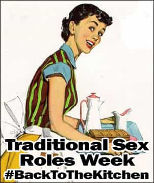

< < < Back
Women Are Sluts If They Sleep Around But Men Are Not – Return Of Kings

We live in a world of many double standards between the two sexes, some of which make sense and can be defended. For example, it’s okay for an older man to date a younger woman, but not the other way around because a man’s value often rises with age while a woman’s does not. This is a double standard no doubt, but one that is backed up by biological reality. Other double standards like promoting female sex tourism while shaming male sex tourism are completely indefensible and can lead to real societal problems.
I want to cover the double standard that is most often brought up by feminists. Why is men who sleep around a lot are studs while women who do it are sluts? This topic has already been covered on ROK before, but I would like to argue that this often brought up double standard is actually not a double standard at all.
If you look at lions, all of the females gather in a herd or pride with one alpha male. The non-pregnant female lions that do all of the hunting must share their food between the cubs, pregnant females, and the alpha male who doesn’t hunt because he must defend his harem from other males. The beta male lions live independently from the pride. Since they are physically larger and only hunt for their own needs they only have to expend a fraction of their total energy on hunting. They don’t breed so they spend most of their time doing this…
What we have here is male lions having an excess of hunting ability and a shortage of reproduction (sex), while female lions experience the opposite. Lions have never figured out that they could make a trade for their own benefit but humans, and to a lesser degree other primates, have. Getting sex from a male is and always will be very cheap for even average women (with the exception being sex with male celebrities). However, the resources that men are able to produce due to greater physical strength, higher stress thresholds, and better logical cognitive abilities is not cheap at all. The basis of male-female relations has always been about the female trading access to her vagina (sex) for the labor and utility of the male (gifts or services).
So what does this have to do with sluts and studs? Well, a woman is considered a slut not if she has lots of sex, but if she gives it up easily. She is shamed not by men but rather by women who are angry that her giving easy access to sex is causing the value of sex in the market to go down. On the other hand, if a woman is able to obtain a great deal of resources from high quality men for a minimal amount of access to her pussy, then she is considered to be the equivalent of a male hustler.
So what then makes a male a real stud? It is not having sex with beautiful women. It is a man’s ability to not pay an arm and a leg to do it. When a man is willing to pay an unreasonably high amount of his male utility for sex with a woman, or in many cases simply the possibility of sex with a woman, then it raises other women’s expectations for other men making those women worthless for relationships.
These are the men who the manosphere refers to as simps. In the blue pill world these men are referred to as tools. These simps/tools are the equivalents of female sluts because they give away access to their resources, which is the equivalent of female’s access to sexual intercourse, for next to nothing. Even in the blue pill world they are being shamed for it.
There is therefore no double standard. Women who give up their relationship bargaining chip (sex) too easily are shamed as sluts. On the other hand, they are praised if they can rake in huge amounts of male utility in return for it. Men who give up their relationship bargaining chip, money or labor, too easily are shamed as simps. On the other hand, they are praised as players if they can score an attractive girl quickly without spending much money on them.
Are you on Twitter? Discuss this post using the hashtag #BackToTheKitchen.
Read Next: A Woman’s Most Potent Weapon Is Emotional Manipulation


{kind=link}
{kind=link}
{kind=link}
{kind=link}